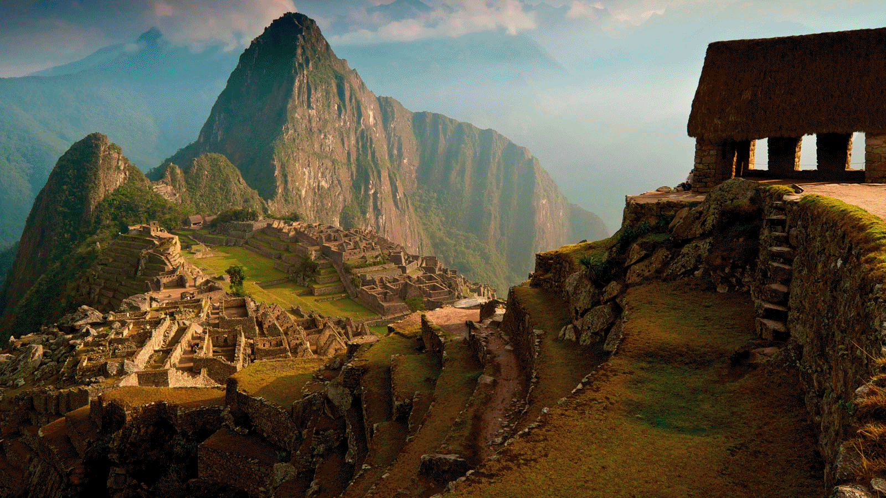

Paquete 2 viaje Cusco-Machu Pichu
S/600 a S/900 por persona
- Te ofrecemos 7 noches y 6 días con un 35% de descuento.
- Estancia en un hotel 4 estrellas.
- Te brindamos desayuno a la habitación, almuerzo y cena
en nuestro buffet, acceso al mini-bar y muchas opciones
mas.
- Cercanía a lugares turísticos y restaurants.
- Brindan una estancia segura con cámaras de seguridad,
implementos de primeros auxilio, etc.
- Atracciones destacadas como: Iglesia de La Merced, Templo
de Coricancha, Mercado central, Estación de tren de San
Pedro, Yacimiento de Quenqo, Fortaleza de Sacsayhuamán,
Estación de tren de Wanchaq, Estación central de autobús,
Fortaleza de Puca Pucara y Machu Pichu con una noche en la
ciudad de Machu Pichu.
- ¿Que hay cerca?
Convento de Santa Catalina, Museu de Arte
Religioso, Capilla
de la Sagrada Familia, Hatun Rumiyoc
- Piedra de los 12 ángulos,
Iglesia de Santo Domingo,
Catedral de Cusco, Iglesia de la Compañía
de Jesús, Plaza
de Armas de Cusco, Iglesia de San Blas, Museo Inca.
- Contamos con todos los protocolos de bioseguridad.
